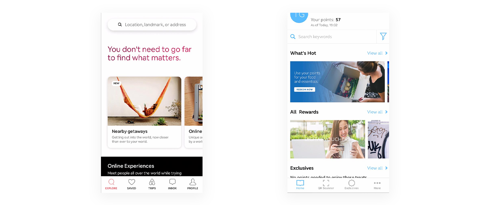

-
Category:
UX/UI design
-
Date:
Aug 2019
Overview
Smart Infinity App is an application created for the telecommunications’ premium subscribers. This application consists of rewards and perks for having platinum plans.
Problem statement
In the creation of this study, there is the lingering risk and uncertainty as it is a new application to be introduced by the client to the public causing the application to be designed from scratch. This application should focus on the main users, the platinum Smart subscribers and should be something they would be enticed to use.
Role & audience
As an UX/UI design intern in GroupM, this was one of the prototypes assigned for us to do. The target market of the application study are, as mentioner, the premium subscribers of the telecom brand
Process
Competitive analysis & research
We were briefed and tasked to create a competitive audit for the Smart Affinity App in comparison to other Telco Mobile Apps found locally, regionally and internationally. With this, we are supposed to have a deck as output in order to properly format the background information and data gathered before actually creating the design studies. The deck included research about the competitor apps which includes performance review, app downloads, app popularity, app features checklist, daily active users, likelihood of everyday usage, UI screenshots, etc.
Through this, we were able to have the basis of the best practices and features to be followed when creating the prototype. The analysis allows you to see what is the current and most appropriate styles or designs in applications in this kind of category.
{kind=link}
Competitiors part of the competitive analysis
The general design approach on the presented study of the Smart Infinity App is in accordance to both the client’s product quantum (that includes the brand personas) given, as well as the existing applications in today’s mobile industry that meet the standards of a valuable product with similar goals.
For this specific design, the Airbnb and Globe Rewards applications were used as a guide for its layout and content. These two were respectively regarded as basis given that: First, Airbnb has an interface that is not only aesthetically simple and pleasing for the users but it is also of ease to use for most individuals in the millennial community, which is the target market presented in the quantum deck. Second, the Globe Rewards is an existing application that has a similar goal to the requested app, which is to showcase rewards and promos to its subscribers. The prototype was then matched to the standards of this specific app that has the same end goal to ensure value for its future users.

{kind=link}
Airbnb and Globe Rewards app screenshots
Prototyping
The gold and dark grey color scheme of the prototype illustrates a sophisticated and elegant appearance in order to cater to the application’s elite target market. The thin and regular fonts of Helvetica Neue were used all throughout the prototype to maintain the elegance of the interface.
The prototype includes a bottom navigation bar to establish an easy navigation of pages throughout the use of the app. The layout of the perks and rewards in the app were organized in a way that it would make the user feel that each of it is worthy of a great deal. These are divided into navigation items wherein the user is able to:
1) Explore perks and rewards near its location
2) Discover perks and rewards based on the user’s preference and history
3) Search promos and rewards in their own time.
These aspects were considered to cater the user’s experience during the app. It is evident in applications like Airbnb, Zomato, etc. that users are able to conveniently look for a value based on their location, choices, or feelings.
In the search function, the user will be able to filter out the expected results by the latest to the oldest and vice versa, by the most expensive to the least and vice versa, and by category. It is also to be noted how the perks are presented first than the rewards to gratify the use of the application as these promos are exclusively for the subscriber with no transaction needed. For each perk and reward selected, the user is able to redeem the selected item, save it into his/her calendar for future use or gift it to someone else.
Other features of the proposed application includes a hamburger menu which shows to the user’s profile details as well as links to other necessary components of the application. A chat bot is also part of the prototype, as requested by the client, in a familiar layout similar to that of any chatting applications. In addition to this bot is the option to directly contact someone from the Concierge. The Infinity Badge was also translated into a QR code, since this is the most efficient and modern way to scan or access your account in any store. For easy access, users are simply to login through the biometrics feature to enter the application. However, a login page using a password is also included in the application.

Login animation and app home carousel
{kind=link}
For you, View reward/perk, and Search screens made with Adobe XD
Adding interactivity
A noted addition to the prototype is the aspect that exceeds usual mobile application interaction, which is gamification. The middle and most noticeable button found in the navigation bar is the infinity sign logo of the program. Once the button is triggered, it brings out the screen of a slot machine. The user is then able to use this simple game once a day wherein they have the chance to be able to win special rewards. This feature was made to entice the users to use the application on a daily basis. A slot machine game was chosen since the use of casinos and the like, match the gold and dark vibe of the application seemingly pertaining to popular contemporary luxurious themes like Luhrmann’s 2013 film of the “The Great Gatsby.” This activity is also often associated as that of a high class activity as it is always located in fancy hotels, restaurants, retail shopping, cruise ships or other tourist attractions, thus fitting for the overall target of the application.

Slot machine game
Results and lessons learned
My co-intern and I created two separate individual prototype study for the app. He said that each of our work was good. He particularly liked the slot machine game that I suggested. He also asked for the screens of our prototypes and he would be considering the ideas to present to GroupM’s client, Smart.
Project takeaways
This was one of the projects that I particularly liked during my internships. It was a good application and I loved the gamification challenge they told us to tackle. It was also interesting since we did a comparative study before prototyping. It was one of the first UX research tasks I’ve done, and I realized the value of it in this task. I was able to design better because of the analysis and research we made beforehand. I had properly understood the context and market of the app.
To add, this internship was my first direct and actual experience with UX and UI design and it made me realize how I wanted to learn more and pursue this field. It was a good first experience and I was eager to learn more. UX is a practice, and internships are really a good start if you want to learn something new.
Thank you to Mr. Mon Corpuz and Mr. Martin Calderon for being our managers during the internship. Shoutout to Jodie Tanco, who I worked together with to learn about UX during this internship.
Other UX/UI projects

Compee branding and website
A e-commerce business that offers computer products and services

THE GUIDON Online
An interactive article that tackes the future of the publication online